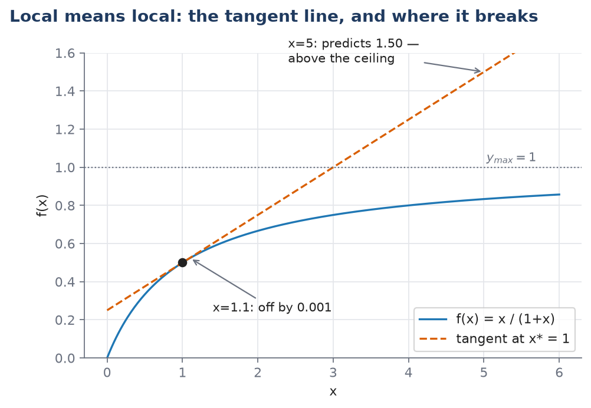

L02 — The Mathematical Toolkit
Practical: 
01_ode_intro
Source: Ingalls Appendix B.1–B.2 and §1.5.
By the end of this lecture you should be able to:
- Read a rate off a time course, and state its units and what the number means physically.
- Name every symbol in \(\dfrac{d\mathbf{x}}{dt} = f(\mathbf{x}, \mathbf{p})\), and say whether a given quantity is a state variable or a parameter for a stated time-scale.
- Integrate a one-variable ODE in Python with
solve_ivpand plot it.
The hook: a rate you can already read
Here is a measured time course — a concentration, rising, then bending over as it approaches a ceiling. No formula, just the curve. Pick a point partway up the bend. How fast is the concentration changing right there?
You already have an intuition: steeper means faster. This lecture makes that intuition exact, gives it units, and then asks you to trust it as a physical statement rather than a picture.
The derivative, as a rate
From two points to one
Start with something you already trust completely: an average rate of change. Suppose a concentration \([A]\) was \(2\) mM at \(t = 10\) s and \(5\) mM at \(t = 20\) s. It rose by \(3\) mM over \(10\) s, so on average it rose at
\[\frac{5\text{ mM} - 2\text{ mM}}{20\text{ s} - 10\text{ s}} = 0.3\ \text{mM}\!\cdot\!\text{s}^{-1}\]
That’s a slope: rise over run, the slope of the straight line through the two points.
Now ask a sharper question: what was the rate at \(t = 10\) s exactly, not averaged over the next ten seconds? Move the second point closer to the first — \(t = 15\) s, then \(t = 11\) s, then \(t = 10.1\) s. Each time you get a new average rate, and as the second point approaches the first, the straight line through the two points pivots and settles onto the line that just grazes the curve at \(t=10\) s: the tangent. That limiting slope is the derivative.
Here’s why this needs a name and a limit rather than just “plug in the same point twice”: at the moment the two points coincide, both the rise and the run are zero, and \(0/0\) is not a number — it says nothing at all. So the derivative is defined as what the ratio approaches as the points come together, never as what it equals when they meet. That’s the entire job of the word “limit.”
The definition
Take two points, \(x_0\) and \(x\), on the input axis of a function \(f\). Their average rate of change is
\[\frac{f(x) - f(x_0)}{x - x_0} \tag{B.1}\]
Both differences here are ordinary subtractions and the ratio is an ordinary division — nothing new yet. A limit, written \(\lim_{x \to x_0} h(x)\), is the value a function would be expected to take at \(x_0\) based on its behaviour at points near \(x_0\) — without ever evaluating it exactly at \(x_0\).
The derivative of \(f\) at \(x_0\) is the limit of (B.1) as \(x\) closes in on \(x_0\):
\[\left.\frac{d}{dx}f(x)\right|_{x = x_0} \;=\; \lim_{x \to x_0}\frac{f(x) - f(x_0)}{x - x_0} \tag{B.2}\]
Two notations for the same thing at an unspecified point: \(\frac{d}{dx}f(x)\), or the shorthand \(\frac{df}{dx}\). Write the vertical bar, \(\big|_{x=x_0}\), when you mean the value at one particular place — that’s a number. Without the bar, \(\frac{df}{dx}\) is a function: it has its own value at every point where \(f\) is differentiable.
Because the derivative is itself a function, it can have its own derivative — the second derivative, \(\frac{d^2}{dx^2}f(x)\). If the first derivative is a rate, the second is how fast that rate itself is changing.
Say it once, plainly, because everything after this depends on it: a derivative is a rate, and rates have units. If \([A]\) is measured in mM and \(t\) in seconds, then \(\frac{d[A]}{dt}\) is measured in mM·s⁻¹, every single time. This is not a special property of any one model — it’s what “derivative” means.
Worked example — computing one from the definition
We want the derivative of \(f(x) = x^2\) at \(x_0 = 3\), and we’re going to get it from the definition (B.2) rather than a shortcut, so that the definition earns its keep once before you stop using it directly.
Form the difference quotient (B.1) with \(f(x) = x^2\) and \(x_0 = 3\):
\[\frac{f(x) - f(3)}{x - 3} = \frac{x^2 - 9}{x - 3}\]
The numerator factors as a difference of squares:
\[= \frac{(x-3)(x+3)}{x - 3}\]
For any \(x \ne 3\), the factor \((x - 3)\) in the numerator and denominator cancels — and we’re allowed to do this, because the limit only ever examines \(x\) near 3, never \(x\) equal to 3 itself:
\[= x + 3\]
Now let \(x \to 3\). The expression \(x + 3\) approaches \(6\) — no cancellation trick needed at this step, since \(x + 3\) has no problem at \(x = 3\). So
\[\left.\frac{d}{dx}x^2\right|_{x=3} = 6\]
Compare this against the power rule below, \(\frac{d}{dx}x^n = nx^{n-1}\), which gives \(2x\), and at \(x=3\) that’s also \(6\). They agree, as they must — the rules in the next section are just faster routes to the same limit.
Differentiation rules — a reference, not a lecture
Computing every derivative from the limit is, in Ingalls’ word, “cumbersome.” These ten rules let you skip it. Learn to look them up, not to recite them.
| # | Rule | Statement |
|---|---|---|
| 1 | Constant | \(\dfrac{d}{dx}c = 0\) |
| 2 | Identity | \(\dfrac{d}{dx}x = 1\) |
| 3 | Power | \(\dfrac{d}{dx}x^n = n x^{n-1}\) |
| 4 | Exponential | \(\dfrac{d}{dx}e^x = e^x\) |
| 5 | Natural log | \(\dfrac{d}{dx}\ln(x) = \dfrac{1}{x}\) |
| 6 | Scalar multiple | \(\dfrac{d}{dx}\,c\,f(x) = c\,\dfrac{d}{dx}f(x)\) |
| 7 | Addition | \(\dfrac{d}{dx}\big(f_1 + f_2\big) = \dfrac{df_1}{dx} + \dfrac{df_2}{dx}\) |
| 8 | Product | \(\dfrac{d}{dx}\big(f_1 f_2\big) = f_1\dfrac{df_2}{dx} + f_2\dfrac{df_1}{dx}\) |
| 9 | Quotient | \(\dfrac{d}{dx}\dfrac{f_1}{f_2} = \dfrac{f_2\frac{df_1}{dx} - f_1\frac{df_2}{dx}}{[f_2]^2}\) |
| 10 | Chain | \(\dfrac{d}{dx}f_1(f_2(x)) = \left.\dfrac{df_1}{dw}\right|_{w = f_2(x)}\cdot\dfrac{df_2}{dx}\) |
Rules 6 and 7 together are what it means for differentiation to be linear — see linearity and nonlinearity below for what that word buys you in general. Rules 8 and 9 exist precisely because differentiation is not linear in products and quotients; you cannot just differentiate the two pieces separately and multiply or divide the results.
The chain rule reads worst on the page and gets used the most. In words: differentiate the outer function first, leaving the inner one untouched inside it, then multiply by the derivative of the inner one.
Worked example — reading the shape off the derivative
Take \(r(s) = \dfrac{2s}{s+4}\). This is Exercise B.1.1(ii) in the book. Apply the quotient rule with \(f_1 = 2s\) (so \(\frac{df_1}{ds} = 2\)) and \(f_2 = s + 4\) (so \(\frac{df_2}{ds} = 1\)):
\[\frac{dr}{ds} = \frac{2(s+4) - 2s(1)}{(s+4)^2} = \frac{2s + 8 - 2s}{(s+4)^2} = \frac{8}{(s+4)^2}\]
Now read what this says, not just what it equals. The derivative is \(\frac{8}{(s+4)^2}\): positive everywhere \(s\) is defined here (a positive number over a squared, positive denominator), and it shrinks as \(s\) grows (a fixed numerator over a growing denominator). A function whose derivative is always positive but always shrinking is rising, but rising at an ever-slower rate — exactly the shape of a saturating curve. In fact \(r(s)\) is one, with ceiling \(y_{max}=2\) and half-maximum point \(K=4\): check \(r(4) = 8/8 = 1 = y_{max}/2\). The derivative told you the shape before you plotted anything.
This reading-the-shape skill matters more than table fluency. A common mistake is reaching for the quotient rule whenever a fraction bar appears — try differentiating \(\frac{x^2}{5}\) and notice rule 6 (scalar multiple, since \(5\) is a constant) does it in one step, with no quotient rule needed.
Partial derivatives — the same idea, one variable at a time
A reaction rate usually depends on more than one concentration. Mass action for \(A + B \to C\) gives a rate \(k[A][B]\) — it depends on both \([A]\) and \([B]\). Asking “how fast does the rate change?” is now an incomplete question: change with respect to \([A]\), or with respect to \([B]\)? A multi-variable function needs a separate rate of change for each input, and those are its partial derivatives.
This is not new machinery. Freeze every input but one, and what’s left is an ordinary single-variable function, which you already know how to differentiate. The curly \(\partial\) is a reminder that something was held fixed — it is not a signal that a different kind of mathematics is happening.
In practice: to compute \(\partial g/\partial x_1\) for a function \(g(x_1, x_2, x_3)\), treat \(x_2\) and \(x_3\) as if they were constants, and apply the ordinary rules from the table above to what’s left.
Worked example
Take the mass-action rate \(v([A],[B]) = k[A][B]\), with \(k\) a fixed rate constant.
To find \(\partial v/\partial[A]\), treat \([B]\) as a constant, call it \(c\). Then \(v = (kc)\cdot[A]\) — a constant multiplied by \([A]\) — so by the scalar-multiple rule (6) and identity rule (2):
\[\frac{\partial v}{\partial [A]} = k[B]\]
By the same argument with the roles swapped,
\[\frac{\partial v}{\partial [B]} = k[A]\]
Read what these say. The sensitivity of the reaction rate to \([A]\) is proportional to how much \([B]\) is present. If there is no \(B\) at all, adding more \(A\) changes the rate not at all — which matches the chemistry, since a reaction needing both reactants can’t proceed with only one, and it’s satisfying that the mathematics says so without being told.
Optional stretch: implicit differentiation
Sometimes a function is given by an equation, not a formula — you can’t isolate \(f(x)\) on one side. Ingalls’ example: \(x + f(x) = (1+f(x))^{-3}\). You can still get \(\frac{df}{dx}\): differentiate both sides (using the chain rule wherever \(f(x)\) appears), then solve the resulting equation for \(\frac{df}{dx}\) as if it were an ordinary unknown. The answer will still contain \(f(x)\) — that’s expected, since an implicit definition gives an implicit derivative — but you never needed a formula for \(f\) itself. Not examined this term; see implicit differentiation if you want the full worked derivation.
What a rate equation is made of: state and parameter
Two roles, and which is which depends on the question
A model tracks some quantities as they change and holds others fixed. The ones it tracks are state variables — for a reaction network, one per molecular species, usually its concentration. Together they form the state: a complete description of the system’s condition at one instant. The model’s dynamic behaviour is nothing more than the time course of the state — how those numbers move.
Parameters are everything else the equations need: association constants, maximal expression rates, degradation rates. They characterise the interactions and the environment rather than the momentary condition of the system.
Write the state of a three-species model as a list:
\[\mathbf{x}(t) = \big([A](t),\; [B](t),\; [C](t)\big)\]
The bold \(\mathbf{x}\) is the whole state; \(t\) is time; each entry is a concentration — say, in millimolar (mM). A dynamic model is a rule for how \(\mathbf{x}\) changes:
\[\frac{d\mathbf{x}}{dt} = f(\mathbf{x}, \mathbf{p})\]
Read it left to right, and be able to say what every symbol is:
- \(\frac{d\mathbf{x}}{dt}\) — the rate of change of each concentration in the state, in units of concentration per unit time.
- \(f\) — a function you build from the chemistry, starting in L03.
- \(\mathbf{p}\) — the list of parameters. The reason it’s written separately from \(\mathbf{x}\) is that \(\mathbf{p}\) does not depend on \(t\): across one simulation run, \(\mathbf{p}\) sits still while \(\mathbf{x}\) moves.
One more ingredient, neither a state variable nor a parameter: the initial condition \(\mathbf{x}(0)\), the state at the moment you start watching. Changing \(\mathbf{p}\) means changing the system or its environment; changing \(\mathbf{x}(0)\) means starting the same system somewhere else.
Worked example, with a unit check
\[\frac{d[A]}{dt} = k_0 - k_1 [A]\]
One state variable, \([A]\), in mM. Two parameters: \(k_0\), a constant production rate in mM·s⁻¹, and \(k_1\), a degradation rate constant in s⁻¹. Check the units before trusting the equation: \(k_1[A]\) has units \(\text{s}^{-1}\cdot\text{mM} = \text{mM}\!\cdot\!\text{s}^{-1}\), which matches \(k_0\) and matches the left-hand side \(d[A]/dt\). This dimensional check costs one line and is the cheapest error-catcher you own — do it on every equation you write from here on.
It’s a modelling choice, not a fact about the world
Ingalls is explicit that the state/parameter split “depends on the model’s context and on the time-scale over which simulations run.” His example is enzyme abundance. In a metabolic model running over seconds to minutes, the enzyme pool doesn’t change appreciably during the run, so treating it as a parameter is reasonable. In a gene-regulatory model running over hours — where the enzyme’s own production is being controlled — that same enzyme’s abundance is a time-varying state variable.
Nothing about the enzyme changed between these two descriptions. The question changed. This same reasoning reappears in L04 as the quasi-steady-state approximation, so it’s worth having landed here first.
Linearity and nonlinearity
The test
A relationship is linear if it is a direct proportionality: \(y = kx\) for a fixed constant \(k\). The formal test, which applies to any function \(f\) and works for more complicated cases too: \(f\) is linear if both of the following hold for every input and every constant \(c\):
\[f(x_1 + x_2) = f(x_1) + f(x_2) \qquad\text{and}\qquad f(cx) = c\,f(x)\]
In words: the response to a sum of inputs equals the sum of the individual responses, and scaling the input scales the response by the same factor — no more, no less.
Check \(f(x) = kx\): \(k(x_1+x_2) = kx_1 + kx_2\) ✓, and \(k(cx) = c(kx)\) ✓. Linear.
Check \(f(x) = x^2\): expand \((x_1+x_2)^2 = x_1^2 + 2x_1x_2 + x_2^2\). This is not equal to \(x_1^2 + x_2^2\) — there’s a leftover cross-term, \(2x_1x_2\). That term is the two inputs interfering with each other, which is exactly what linearity forbids. Nonlinear.
Why this matters immediately
The mass-action rate for \(A + B \to C\) is \(k[A][B]\) — a product of two variables. A product of variables is never linear (apply the test above to \(f([A],[B]) = k[A][B]\) and you’ll find the same kind of cross-term). So even the simplest two-reactant chemistry in this course is already outside linear theory, before you’ve written a single differential equation. This is why almost nothing interesting in biology is linear, and it’s the reason complex behaviour — two stable states, oscillation, switching — needs nonlinearity to exist at all. A linear model has nowhere to put a second stable state; a proportionality only ever has one answer.
Ingalls names two nonlinear shapes that recur throughout this course, both called saturation: hyperbolic, which bends over immediately and flattens, and sigmoidal, which stays flat, then rises switch-like, then flattens. You met both informally in L01; L05 and L06 derive them from mechanism.
A one-sentence aside
A straight line that misses the origin, \(y = mx+b\) with \(b \ne 0\), fails the test above (check \(f(cx) \ne c f(x)\) unless \(b=0\)) and is technically affine, not linear. Ingalls doesn’t draw this distinction and neither does this course, but it’s worth knowing the word exists.
Local versus global behaviour
The escape from “nonlinear models are hard”
A full account of everything a nonlinear model can do, under every possible condition, is usually out of reach. So don’t ask for it — ask instead what the system does near one operating point, where “operating point” just means a value of \(x\) you care about, often a steady state.
The mathematical fact making this work is one you already have: a smooth curve, viewed closely enough, looks like a straight line — that’s what a tangent line is. The objection is obvious and worth taking seriously before dismissing it: doesn’t throwing away everything except the local slope lose too much? Two answers. First, the global behaviour of many systems is largely determined by what happens near a handful of operating points, so understanding those points well captures most of what matters. Second, self-regulating biological systems — by design — spend most of their time in a narrow band near an operating point, so the approximation is most accurate exactly where the system actually lives.
The mathematics
For a nonlinear function \(f(x)\) and an operating point \(x^*\), the tangent-line approximation is:
\[f(x) \;\approx\; f(x^*) \;+\; \left.\frac{df}{dx}\right|_{x = x^*} (x - x^*)\]
Read each piece: \(f(x^*)\) is the value at the operating point; \(\left.\frac{df}{dx}\right|_{x=x^*}\) is the derivative — a single number, evaluated at \(x^*\), not a function; \((x - x^*)\) is how far you’ve moved away from the operating point. In words: value at the point, plus slope times displacement. The approximation is good when the displacement is small and degrades as it grows, at a rate that depends on how curved \(f\) is.
Worked example, with a warning built in
Take the saturating curve \(f(x) = \dfrac{x}{1+x}\) (this is saturation with \(y_{max}=1\), \(K=1\)), and linearise it at the operating point \(x^* = 1\).
First, the value at the point: \(f(1) = \frac{1}{1+1} = \frac{1}{2}\).
Next, the derivative. By the quotient rule with \(f_1 = x\) (derivative 1) and \(f_2 = 1+x\) (derivative 1):
\[f'(x) = \frac{(1)(1+x) - x(1)}{(1+x)^2} = \frac{1}{(1+x)^2}\]
At \(x^*=1\): \(f'(1) = \frac{1}{4}\).
So the local linear model is:
\[f(x) \approx \frac{1}{2} + \frac{1}{4}(x - 1)\]
Now check it at two points, one close to \(x^*\) and one far:
- At \(x = 1.1\): the approximation gives \(\frac{1}{2} + \frac{1}{4}(0.1) = 0.525\). The true value is \(f(1.1) = 1.1/2.1 \approx 0.5238\). Off by about \(0.0012\) — good to roughly two parts in a thousand.
- At \(x = 5\): the approximation gives \(\frac{1}{2} + \frac{1}{4}(4) = 1.5\). The true value is \(f(5) = 5/6 \approx 0.833\).
The second case is not merely “less accurate” — the approximation has predicted a value of \(1.5\) for a quantity whose ceiling, \(y_{max}\), is \(1\). That’s not a rounding error; it’s a physically impossible answer. Local means local, and the figure below makes it visible: near \(x^*=1\) the tangent line and the curve are indistinguishable, and past a certain point they aren’t describing the same thing at all.

(Regenerated by figs/local_linear.py; the two check values above are computed and asserted in the script, not eyeballed off the plot.)
This page is a promise for L04: exactly this technique — linearising a model near a steady state — is how you’ll decide whether that steady state is one the system returns to after a small disturbance.